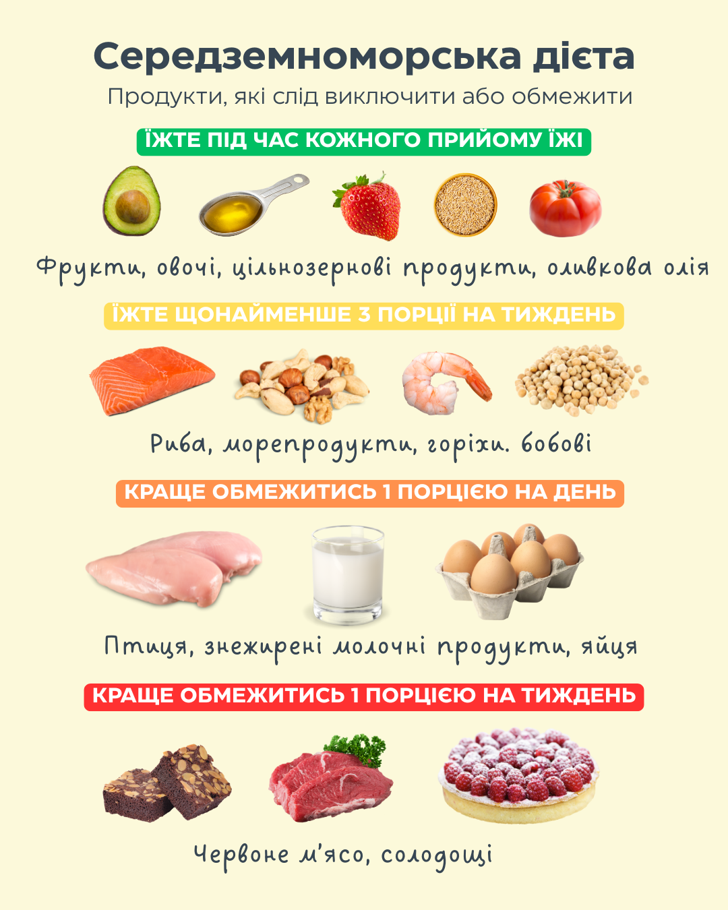

Середземноморська дієта
Що включає?
- Багато овочів, фруктів, бобів, сочевиці і горіхів.
- Значну кількість цільнозернових продуктів, таких як цільнозерновий хліб і коричневий рис.
- Щедру кількість оливкової олії екстра-вірджин, як джерела здорових жирів.
- Чимало риби, особливо риби, багатої на омега-3 жирні кислоти.
- Помірну кількість натурального сиру та йогурту.
- Мало або зовсім не вживати червоного м'яса, обираючи замість нього птицю, рибу або бобові.
- Мало або зовсім не вживати солодощів, напоїв з доданим цукром або масла.

Переваги
- Зниження ризику серцево-судинних захворювань, включаючи інфаркт або інсульт.
- Підтримка здорової маси тіла.
- Підтримка нормального рівня цукру в крові, кров'яного тиску та холестерину.
- Зниження ризику метаболічного синдрому.
- Підтримку здорового балансу кишкової мікробіоти (бактерій і інших мікроорганізмів) у
вашій травній системі.
- Зниження ризику певних видів раку.
- Допомога у продовженні тривалості життя.
Що і скільки їсти?
Свіжі фрукти та овочі
Ціль споживання: Фрукти: 3 порції на день; Овочі: принаймні 3 порції на день.
Розмір порції: Фрукти: ½ – 1 склянка; Овочі: ½ склянки варених або 1 склянка сирих.
- Споживайте принаймні 1 порцію овочів на кожен прийом їжі;
- Обирайте фрукти як перекус.
Цільнозернові продукти та крохмалисті овочі (картопля, горошок і кукурудза)
Ціль споживання: 3–6 порцій на день.
Розмір порції: ½ склянки варених злаків, пасти або каш; 1 скибочка хліба; 1 склянка сухих злаків.
- Обирайте вівсянку, ячмінь, кіноа або коричневий рис;
- Запікайте або обсмажуйте картоплю зі шкіркою або солодку картоплю;
- Вибирайте цільнозерновий хліб, злаки, кус-кус та пасту;
- Обмежте або уникайте очищених вуглеводів (білий хліб, білий рис, оброблені злакові сніданки).
Оливкова олія екстра-вірджин
Ціль споживання: 1–4 порції на день.
Розмір порції: 1 столова ложка.
- Використовуйте замість рослинних олій і тваринних жирів (масло, сметана, майонез)
- Поливайте олією салати, варені овочі або пасту;
- Використовуйте як соус для хліба.
Бобові
Ціль споживання: 3 порції на тиждень.
Розмір порції: ½ склянки.
- Додавайте до салатів, супів і страв з пастою;
- Спробуйте хумус або бобовий соус із сирими овочами;
- Вибирайте овочеві або бобові гамбургери.
Риба
Ціль споживання: 3 порції на тиждень.
Розмір порції: 85–115 г (3–4 унції).
- Обирайте рибу, багату на омега-3: лосось, сардини, оселедець, тунець, макрель.
Горіхи
Ціль споживання: Принаймні 3 порції на тиждень.
Розмір порції: ¼ склянки горіхів або 2 ст. ложки горіхового масла.
- Ідеально підходять волоські горіхи, мигдаль та фундук;
- Додавайте до злаків, салатів, йогурту;
- Обирайте сирі, несолоні, обсмажені без жиру варіанти;
- Їжте окремо або з сухофруктами як перекус.
Птиця
Ціль споживання: Не більше одного разу на день.
Розмір порції: 85 г (3 унції).
- Обирайте біле м'ясо замість темного;
- Вживайте замість червоного м'яса;
- Вибирайте курятину без шкірки або знімайте шкірку перед приготуванням;
- Запікайте, готуйте на грилі або на пару.
Молочні продукти
Ціль споживання: Не більше одного разу на день (менше — краще).
Розмір порції: 1 склянка молока або йогурту; 43 г (1,5 унції) сиру.
- Обирайте нежирний сир;
- Вибирайте знежирене або 1% молоко, йогурт і сири;
- Уникайте молока з високим вмістом жиру, вершків та соусів на основі вершків.
Яйця
Ціль споживання: До 1 жовтка на день.
Розмір порції: 1 яйце (жовток + білок).
- Обмежте жовтки;
- Немає обмежень на білки;
- Якщо у вас високий рівень холестерину, вживайте не більше 4 жовтків на тиждень.
Червоне м'ясо (яловичина, свинина, телятина та баранина).
Ціль споживання: Жодної або не більше 1 порції на тиждень.
Розмір порції: 85 г (3 унції).
- Обмежте до нежирних шматків (наприклад, філе міньйон).
Випічка та десерти
Ціль споживання: Уникайте комерційно приготованих випічок і десертів; обмежте домашню випічку до не більше 3 порцій на тиждень.
Розмір порції: Варіюється в залежності від типу.
- Замість цього обирайте фрукти і нежирний йогурт;
- Для випікання використовуйте рідкі олії замість твердих жирів;
- Використовуйте цільнозернове борошно замість вибіленого або збагаченого борошна;
- Використовуйте білки замість цілих яєць.
Здорові перекуси протягом дня, передбачені середземноморською дієтою:
Ось кілька ідей, що варто мати під рукою:
- Жменя горіхів і насіння (з низьким вмістом солі або без додавання солі);
- Свіжі фрукти, бажано місцеві та сезонні;
- Нежирний грецький йогурт і невеликий шматочок чорного шоколаду (не менше 70% какао);
- Цільнозернові крекери з хумусом;
- Сирі овочі з дієтичним грецьким йогуртовим соусом.
Підсумуємо
Що однозначно варто обмежити:
- Будь-які продукти з доданим цукром (випічка, морозиво, деякі гранолові батончики);
- Будь-які напої з доданим цукром (фруктові соки, газовані напої);
- Пиво та інші алкогольні напої;
- Продукти з високим вмістом натрію або насичених жирів;
- Білий хліб і білий рис;
- Високооброблені продукти (напівфабрикати, чіпси, солодощі, ковбаси, сосиски, солодкі газовані напої);
- Жирне або оброблене м'ясо.